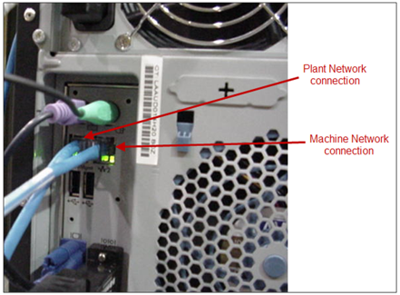
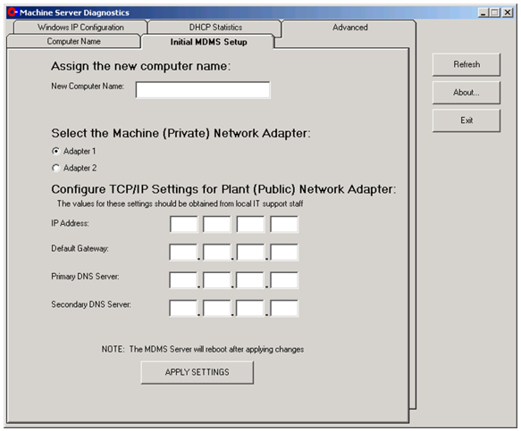
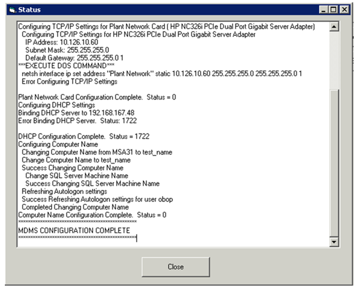
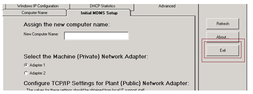
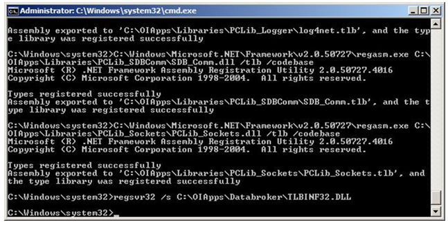
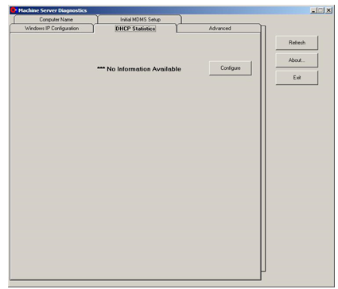
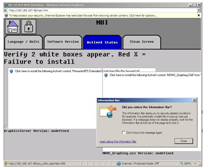
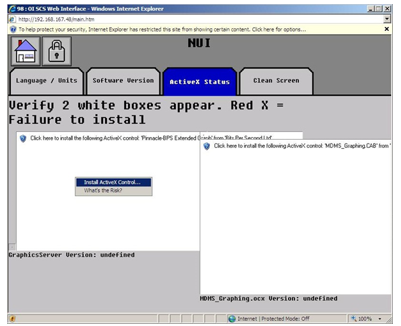
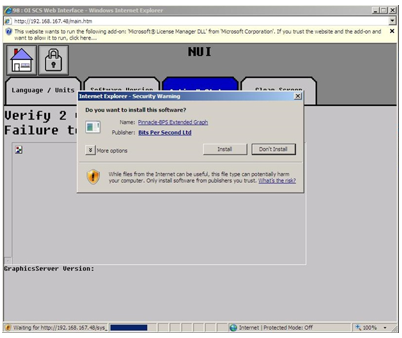
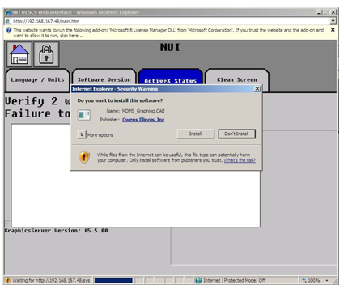

Configuring a Forming Machine Server for Machine Operation
Purpose
This document describes how to configure a Forming Machine Server (SCS-0716 GR01 and higher) for factory and machine-specific installation. It assumes a newly configured machine server (or one that has been reset to factory defaults by following the applicable SOP). See the reference documents for relevant document numbers.
Application
This work instruction applies to all Space Plants that have FSC and Space IS Machines
Procedure
- In The initial configuration of the server (SCS-0716 or equivalent) is a “generic” setup. For this reason, when a server is sent to a factory, additional specific configuration is required. Any modifications done to the server that are not described in this procedure can result in complications which might affect functionality. It is not recommended to change the regional settings of Windows.
- The following configuration checklist presents the steps necessary to configure the Forming Machine Server for operation (as presented in this document):
- Configuration Checklist
- Connect the server to the plant network and the machine network.
- Run MSDiagnostics to change the IP address and the computer name.
- Verify DHCP is functional
- Change the website bindings (Windows Server 2003 systems only).
- Install and activate the application software (SOP-06-007-C).
- Install the virus scan software (SOP-15-004-C) (Space Plants only).
- Install necessary Windows Updates
- Run the SCS setup program.
- Set the correct time, date, and time zone.
- Register ActiveX Controls.
- Run the backup configuration utility (not performed on the backup server).
- Configuration Checklist
-
Connect the Server to the Plant Network and the Machine Network
- Plug one end of an Ethernet cable into port 1 (on the left) at the back of the
server (see REF _Ref435793918 \h \* MERGEFORMAT Figure 1 and REF _Ref435794015 \h \*
MERGEFORMAT Figure 2), and
plug the other end into the network drop which is connected to the plant-wide
network. Note:
The drop must be active.
- Plug one end of another Ethernet cable into port 2 (on the right) at the back of the server, and plug the other end into any port of the multi-port switch.
- Plug in the power cable of the switch.
Figure 1. Figure 1: Machine Server Network Connections 
Figure 2. Figure 2: Machine Server Network Connections for SEP-3-562 
- Plug one end of an Ethernet cable into port 1 (on the left) at the back of the
server (see REF _Ref435793918 \h \* MERGEFORMAT Figure 1 and REF _Ref435794015 \h \*
MERGEFORMAT Figure 2), and
plug the other end into the network drop which is connected to the plant-wide
network.
-
Run MSDiagnostics to Change the IP Address and the Computer Name
- Log onto the obsetup account (password SetupServer).
- Enter the MSDiagnostics program by clicking on Start, andgt; Machine Server Applications, andgt; MSDiagnostics.
- The MSDiagnostics window will open, prompting for a password. Type scsgolden and press the Enter key.
- The Machine Server Diagnostics window will be displayed, as shown in REF _Ref435794113 \h \* MERGEFORMAT Figure 3. Click on the ‘Initial MDMS Setup’ tab and enter a unique name to identify the server (for example: A3MachineServer) in the field labeled ‘New Computer Name.’
- Click on the network adapter that is connected to the Machine Network (this will be the first network adapter radio button, labeled Adapter #1).
- Enter the IP address that has been assigned for the server in the IP Address fields. Enter the Default Gateway field address as the same first three octets used for the Plant Network IP address. The fourth (last) octet will be 1(numeral one). For example, if the Plant IP address is 10.126.12.101, then the Default Gateway IP address will be 10.126.12.1.
- Obtain the IP addresses for the Primary and Secondary DNS Servers and enter
them into the appropriate boxes. Note:
This step is necessary for anti-virus updates to function.
Figure 3. Figure 3: Initial MDMS Network Setup Screen 
- When finished, click on the APPLY SETTINGS button.
- A status window will display the progress of the changes being made. When the
changes are completed, the bottom line will display the message: ‘MDMS
CONFIGURATION COMPLETE,’ as shown in REF _Ref435794876 \h \* MERGEFORMAT
Figure 4.
Figure 4. Figure 4: Network Settings Being Applied 
- Click on the Close button, which will display the main page.
- Click on the Exit Button located on the main page (see
REF _Ref435794981 \h \* MERGEFORMAT Figure 5).
Figure 5. Figure 5: Exit Button on the Main Page 
- Clicking the Exit button initiates a process that
displays several command line windows while the controls are being registered
and enabled on the system. Once the controls are registered and enabled, the
system then automatically starts several forming system’s applications (for
example FSC2COMSOC.exe, MSGAgent.exe, MDB_Agent.exe, and BDSAgent.exe).Note:
This is new behavior associated with Software Set 222
- It will now be necessary to stop the automatically started forming system
applications and close their setup windows. Wait several minutes to insure that
the command windows have all completed their execution (see REF _Ref435795121
\h \* MERGEFORMAT Figure 8),
and then stop and close each application window one-by-one. As an example, REF
_Ref435795033 \h \* MERGEFORMAT Figure 6 shows the
Stop button that is used for stopping the
FSC2COMSOC.exe application.
Figure 6. Figure 6: Stopping a Forming Systems Application. 
- Once each application has been stopped, close the associated setup window by
clicking the X located in the upper right-hand corner of
the title bar (see REF _Ref435795158 \h \* MERGEFORMAT Figure 7)
Figure 7. Figure 7: Exiting a Forming Systems Application 
Note:Confirm that all command windows are displaying prompts similar to those shown in Figure 8, indicating that the command has been fully executed and the controls have been registered and enabled before closing them. Closing command prompt windows before their commands have executed completely prevents that control from being registered and enabled.
Figure 8. Figure 8: Completed DOS window 
- Next, a pop-up window will be displayed prompting for a server reboot. Click
on the OK button (see REF _Ref435795247 \h \*
MERGEFORMAT Figure 9)
Figure 9. Figure 9: Reboot Prompt 
- Consult SOP-16-002-A (Updating DNS Information to the Current Space Global Standard) to ensure DNS services are properly configured.
-
Verify DHCP is Functional
- After the reboot, log out of Obop and log back in as Obdev.
- Enter the MSDiagnostics program by clicking on Start, andgt; Machine Server Applications, andgt; MSDiagnostics.
- The MSDiagnostics window will open, prompting for a password. Type scsgolden and press the Enter key.
- Navigate to the DHCP tab to check operation of the DHCP server. Figure 10 below shows a broken DHCP
configuration.
Figure 10. Figure 10: Failed DHCP 
- If the DHCP tab shows “No Information Available,” as shown in Figure 10, then click the
Configure button to restore the DHCP configuration. Note:
MS Diagnostics will not give any indication while it is correcting the DHCP configuration. DHCP is functional when the DHCP tab appears, as shown in Figure 11
Figure 11. Figure 11: Functional DHCP 
-
Change the Website Bindings (Windows Server 2003 Systems Only)
Note:
This section pertains to Server 2003 installations, only.
- If logged onto the operator account, log out of Obop and log back in as Obdev. Check the webserver bindings (important for the operation of the Space Servo Control System) by clicking the Internet Explorer icon on the Start menu. If the Website does not display, it will be necessary to manually change the webserver bindings. To do this, browse to Start Menu, Programs, Administrative Tools, and then then double-click on IIS Services Manager.
- Expand the Internet Information Services Node. Expand the Server Node. Then, expand Web Sites. Right-click on the SpaceRemote Website (displayed on the right) and then display the SpaceRemote Properties. Click on the “Advanced…” button next to IP Address to modify the bindings (see REF _Ref435796581 \h \* MERGEFORMAT).
- Confirm that 10.126.10.XX (the plant network) is displayed first in the listing, and 192.168.167.
- If the display order is not correct, remove 192.168.167.48 and then re-add it
with the Add/Edit Web Site Identification menu (see REF _Ref435796709 \h \*
MERGEFORMAT Figure 14). This
should now display it as the second listing in the box.
Figure 12. Figure 14: Adding Binding Information 
- Now, highlight the SpaceRemote Website in the Internet Information Services Manager. Click
the Stop radio button
and then click the Start
radio button to restart the website. Note:
An alternate method is to open a command prompt window, type iisrestart , and then press the Enter key.
-
Install and Activate the Application Software (SCS-0237)
- Execute document FES-03-115 to install and activate the latest version of the Machine Server software (SCS-0237).
-
Install the Virus Scan Software (SOP-15-004-C) (Space
Plants only)
- Execute SOP-15-004-C to install Antivirus Software. Note:
This procedure is intended for Space Plants only. The expectation is that Licensee plants will install antivirus software at this time, per instructions and with licenses provided by their IT departments.
- Execute SOP-15-004-C to install Antivirus Software.
-
Install necessary Windows Updates
- Review relevant process control bulletins (example PCB-17-003) for any Windows Server OS patches that must be installed to protect the company’s network. Alternatively, the Windows Updates top level folder of the Space Manufacturing Software Download Site can be reviewed for updates to be applied. As of September 2018, there are two that are still relevant for the Machine Server, Conficker (Windows Server 2003 only) and WannaCrypt (applies to Windows Server 2003 and 2008).
-
Run the SCS Setup Program
- The SCS Setup program is used to accurately configure which forming electronic systems are on the machine for the Machine Server to load. Consult the Machine Server User’s Manual (SCS-0288) for instructions on using SCS Setup.
-
Set the Correct Time, Date, and Time Zone
- Log onto the Administrator account.
- Double-click on the time/date display in the bottom-right corner of the screen and set the time, the date, and the time zone for the desired location
-
Register ActiveX Controls
- Check the status of the ActiveX controls used by the NUI by opening the webpage
and then selecting the monitor in the lower left of the screen (see REF
_Ref435796797 \h \* MERGEFORMAT Figure 15).
Figure 13. Figure 15: NUI Webpage 
- Next, press the ActiveX Verification tab and the screen
will be shown as in REF _Ref435797322 \h \* MERGEFORMAT Figure 16. If the screen appears as
shown in REF _Ref435797835 \h \* MERGEFORMAT Figure 20, the ActiveX controls are
properly registered and no further action is necessary for this section
Figure 14. Figure 16: NUI Webpage Showing ActiveX Not Installed 
- On the “Information Bar” popup, click the “Don’t show this message
again box” and press the close button to
get rid of the popup, which will leave the screen in the state shown in REF
_Ref435797387 \h \* MERGEFORMAT Figure 17.
Figure 15. Figure 17: NUI Webpage Showing ActiveX Not Installed 
- Left-click in the left-hand white box, and select “Install ActiveX
Control…” (also shown in REF _Ref435797387 \h \* MERGEFORMAT Figure
17). Once this is done,
the first step of installing ActiveX will be completed, and the NUI Webpage
will return to the page shown in REF _Ref435796797 \h \* MERGEFORMAT Figure
15. Return to the
ActiveX Status tab again to complete the
installation, as shown in REF _Ref435797739 \h \* MERGEFORMAT Figure 18.
Figure 16. Figure 18: Completing the ActiveX Installation 
- Click the install buttons as they are displayed (see REF
_Ref435797822 \h \* MERGEFORMAT Figure 19 and REF _Ref435797835 \h \*
MERGEFORMAT Figure 20).
Figure 17. Figure 19: Completing the ActiveX Installation, Part 2 
Figure 18. Figure 20: Completing the ActiveX Installation, Part 3 
- Finally, click the X on the Microsoft License Manager to
skip its installation, and then click on the home button
to return to the main NUI webpage. Display the ActiveX Status tab to
verify that the ActiveX controls have been properly installed. The screen
should appear as shown in REF _Ref435797890 \h \* MERGEFORMAT Figure 21 if the ActiveX controls were
successfully installed.
Figure 19. Figure 21: ActiveX Controls Correctly Installed 
- Check the status of the ActiveX controls used by the NUI by opening the webpage
and then selecting the monitor in the lower left of the screen (see REF
_Ref435796797 \h \* MERGEFORMAT Figure 15).
-
Run the Backup Configuration Utility (not performed on the Backup Server)
- Consult the Machine Server User’s Manual (SCS-0288) for instructions on configuring the Machine Server Backups.
Note:
This procedure is not performed on the backup Machine Server.
- Consult the Machine Server User’s Manual (SCS-0288) for instructions on configuring the Machine Server Backups.
Equipment
Two network cables and a network switch.
SCS-0237 Application Software DVD (SWSet) from SOP-08-001-E.
SCS-0234 Virus Scan Software DVD from SOP-08-001-E
References
- SOPs covering the restoration of Machine Server Factory Default Software:, as shown
in the table below:
Space Server Part #
Server Model
Restore SOP
SCS-0716-GR06
Portwell Ruby D711 (for Space plants)
SOP-15-010-A
SCS-0716-GR05
Portwell Ruby D711 (for Licensees)
SOP-15-009-A
SCS-0716-GR04
HP ML350p G8
SOP-15-001-B
SCS-0716-GR03
HP ML110 G7
SOP-12-007
SCS-0716-GR02
HP ML310 G5P
SOP-09-006-C
SCS-0716-GR01
HP ML310 G5
SOP-09-006-C
- Machine Server User’s Manual (SCS-0288).
- Creating Forming Electronics Software (SOP-08-001-E).
- Installing Antivirus on a Forming Machine Server (SOP-15-004-C).
- Updating DNS Information to the Current Space Global Standard (SOP-16-002-A).
- Loading and Activating the Software Set on the Forming Machine Server (FES-03-115)
Document Classification
- Asset Protection and Stability
- Organization and Training
Collaboration
|
Country Group |
Role |
Name |
|
Americas North |
Forming Electronics Specialist |
Dan Knuckles |
|
Europe |
Forming Electronics Leader |
Remko Beckers |
|
Central Europe |
Regional Leader Forming Electronics |
Ruud Bormans |
|
France - Spain |
Jean-Pierre Locato |
Jean-Pierre Locato |
|
Latin America |
IS Machine Leader |
Miguel Morales |
|
Engineering - Forming |
Associate Engineer |
Jose Gonzalez |
|
Global |
Global Forming Electronics Leader |
Franklin Barrios |
Revision History
| 2013-12-16 |
Originally Released as Process Control SOP-10-003-A |
| 2015-04-21 |
Revised and Released as Process Control SOP-10-003-C |
| 2015-12-15 |
Revised and Released as Process Control SOP-10-003-D Updated part numbers to match the drawings and Global Sales purchasing scheme |
| 2016-12-01 |
Revised and Released as Process Control SOP-10-003-E Corrected SOP reference to DNS configuration from SOP-16-003 to SOP-16-003-A Updated remaining SOP references to latest revisions Added reference to SOP-16-009 rather than instructions in the IDS Manual |
| 2018-09-12 |
Revised and Released as Process Control SOP-10-003-F Updated references to external SOPs to current revisions. Added Step 7 to look for and install other OS updates. Added references to Machine Server User’s Manual (SCS-0288) rather than other manuals and SOPs |
| 2022-06-29 |
Approved by Franklin Barrios, Global Leader FES Network Moved to GMF Site as FES-03-116 |